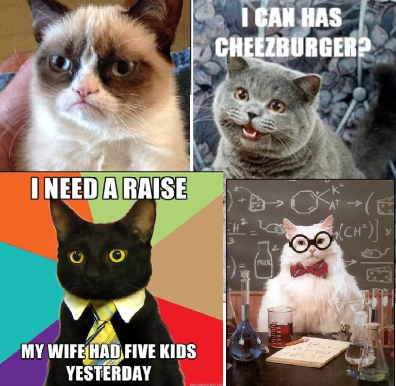

Hela Internets Favoritdjur
Sedan internet blev öppet för allmänheten har det använts till att sprida kunskap, okunskap, memes och
diverse tidsfördrivande nonsense i otaliga kategorier. Men få saker har förblivit så populära genom alla
epoker av internet-baserad populärkultur som katter. Alla älskar katter. Till och med folk som inte älskar
katter verkar vara pigga på bilder av katter. Från motiverande kontors-affischer till en 12-årings
första digitala konstverk från MS Paint's storhetstids, kattbilderna har tagit internet med storm och verkar
inte vara på väg ut än.
Pajamas and Nick Drake

Steve Chen, en co-founder av YouTube, lade upp en video där han lekte med sin katt Pajamas, publicerad 22
Maj 2005. Denna video, kallad Pajamas
and Nick Drake, är den första kattvideon som någonsin lades upp på internet. Video har idag endast
139 tusen visningar, vilket är lite udda för en sådan historisk video. Katternas genomslag på webben skulle
dock få sitt stora startskott nästa år, med användaren Sanchey's video Puppy vs. Cat, som idag har
över 16 miljoner visningar.
Kattbildernas Hall of Fame

Katter i bildformat och som memes, inledde sin storhetstid med bloggsidan I Can Has Cheezburger, skapad av Eric
Nakagawa och Kari Unebasami. Som mest hade sidan över en och en halv miljon träffar dagligen i Maj 2007, och
var den mest populära sidan på hela webben för att dela bilder och memes med djur, ofta katter. Det var här
som den ikoniska memes "I Can Has Cheezburger" härstammade, därav namnet på sidan.
I samma anda kom memes som Professor Cat, Business Cat, och även när själva sidan I Can Has Cheezburger för
länge sedan hade haft sin tid i rampljuset, kom renässansen för katt-memes i och med sensationen Grumpy Cat
år 2012. Denna katt, vars riktiga namn var Tardar Sauce, var kanske 2010-talets sista stora katt-meme, och
dog i Maj 2019 medan populärkulturen successivt rörde sig bort från kattbilderna.
Kattbilder Idag
Katter är idag fortfarande populära, men samma sorts meme-kultur som gav upphov till katt-baserade image
macros och störiga techno-remixes har antingen försvunnit eller bara efterrapats ironiskt. Idag hör katterna
mer till sociala medier där folk lägger upp "vanliga" bilder på sina pälsbebisar, som förvisso är populära
för att de är så förbaskat gulliga.
Idag beräknas det ligga cirka 6.5 miljarder kattbilder uppe på internet.